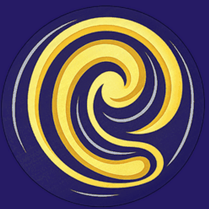

ThaiEar — learn Thai by listening
Topics Thai sentences by subject, with audio, translations and word notes. Playlists Save sentences from any topic into your own listening sets. Read Thai Learn to read the script, from zero.
